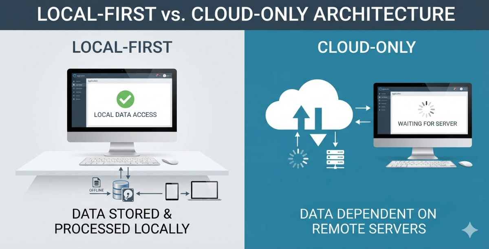

Local-First vs. Cloud-Only Architecture: Why Keeping Data Local-First Improves Enterprise Application Speed and Uptime
In recent years, the software industry rushed toward cloud-only SaaS models. While cloud computing offers scale and central accessibility, modern enterprise operations have exposed its fundamental vulnerability: total reliance on round-trip internet connectivity. At DataCore Systems, we design and advocate for Local-First Web Applications—a paradigm that delivers instant local responsiveness while preserving all benefits of centralized server synchronization.

01. Zero-Latency User Experience (Instant Local Reads & Writes)
Cloud-only web applications force every database transaction—every button click, form input, or query—to travel over the WAN to a remote data center. Even under optimal network conditions, latency ranges between 50ms and 300ms per round trip.
- Local Data Execution: Reads and writes occur instantly on local memory or a local database engine (e.g., SQLite, IndexedDB, or local SQL Server), achieving sub-millisecond response times.
- Elimination of Loading Spinners: Operations do not block the user interface waiting for remote API confirmations.
- High Throughput Data Entry: Staff working with high-volume data forms experience no lag, significantly boosting daily operational efficiency.
02. Uninterrupted Enterprise Uptime & Offline Resilience
Network disruptions, ISP outages, DNS failures, or third-party cloud downtime should never lock staff out of their daily tools. Local-first architecture guarantees 100% operational availability regardless of internet connectivity status.
- Seamless Offline Operation: Users continue creating records, generating local reports, and modifying data completely offline without interruption.
- Background Sync Pipelines: As soon as connectivity is restored, automated sync queues reconcile local modifications with the central server back-end.
- Business Continuity: Plants, banks, fulfillment centers, and field operations remain operational even during severe connectivity disruptions.
03. Data Governance, Security & Ownership
In cloud-only architectures, enterprise data lives behind proprietary third-party APIs in proprietary database formats. Local-first architectures restore full data sovereignty and enhance security.
- Full Sovereignty: Primary operational data resides within your own enterprise infrastructure and local storage, eliminating vendor lock-in.
- Reduced Attack Surface: Sensitive internal operational logs and daily transaction records do not need to be exposed continuously to public cloud endpoints.
- Compliance Ready: Built to meet strict corporate compliance, security, and internal audit policies (such as ISO 9001 and local financial data retention requirements).
04. Architectural Comparison
| Architecture Feature | Cloud-Only SaaS | Local-First Enterprise |
|---|---|---|
| Read/Write Latency | 50ms - 1000ms+ (Network dependent) | < 1ms (Instant Local Execution) |
| Internet Outage Behavior | Complete application lockout | 100% Uninterrupted productivity |
| Data Control & Privacy | Hosted on third-party cloud servers | Stored locally on enterprise systems |
| Scalability & Bandwidth | Consumes heavy cloud bandwidth | Efficient asynchronous batch sync |
Looking to modernize legacy databases into resilient web systems? At DataCore Systems, we specialize in building fast, local-first web applications backed by robust SQL Server and modern database architectures.
Get in Touch